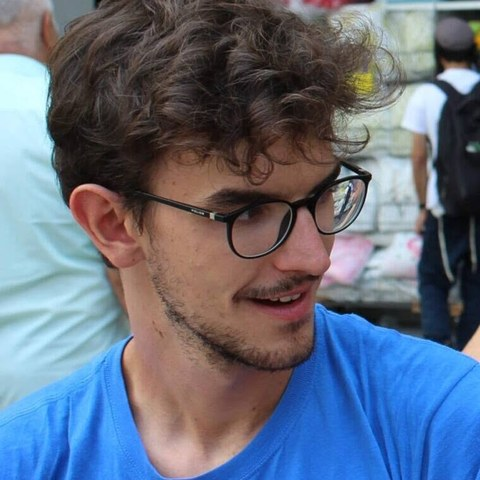

The One-Step Principle: Performative Model Selection under Perceived Admissibility Parity
ForthcomingPhilosophy of Science

PhD Candidate in Philosophy · University of Milan
I am a PhD candidate in philosophy at the University of Milan and an affiliated researcher in the ERC project Managing Performative Science (MAPS) at Leibniz University Hannover. I work in philosophy of science, decision theory, philosophy of economics and ethics, with a focus on performative models and decision-making under moral uncertainty.
Peer-reviewed
Philosophy of Science
Other publications
In Etica normativa, Proceedings of SIFM 2025
Argumenta
Under review
Moral Uncertainty and Institutional Decision-Making
SILFS Conference, IUSS Pavia
The One-Step Principle: Choosing Performative Game-Theoretic Models of Pro-Environmental Behaviours
INEM Lake Como Summer School in Philosophy of Economics
Norms as Catalysts of Social Tipping Points
Social Ontology 2025, Trinity College Dublin
Moral Uncertainty: From Maximizing Expected Choiceworthiness to Suppositional Desires
Eindhoven University of Technology
Teaching assistant and seminar leader for Prof. F. Guala · MA in Politics, Philosophy and Public Affairs, University of Milan · taught in English
Teaching assistant and seminar leader for Prof. E. Matelli · Catholic University of Milan · supervised BA theses
Contact
alessandro.guerra@unimi.it
alessandro.guerra003@gmail.com
Department of Philosophy, University of Milan · Via Festa del Perdono 7, 20122 Milan